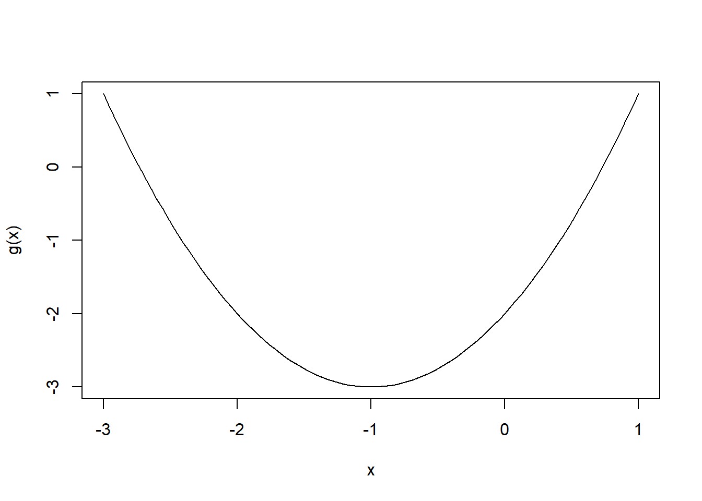

optimize(f, interval, ..., lower = min(interval), upper = max(interval),
maximum = FALSE, tol = .Machine$double.eps^0.25)14 Numeeriset menetelmät
HUOM! Tätä osiota ei tarvitse opiskella Itä-Suomen yliopiston kurssilla!
Monilla käytännön matemaattisilla ongelmilla ei ole suljetussa muodossa esitettävissä olevaa ratkaisua. Tällöin joudutaan tyypillisesti turvautumaan numeerisiin menetelmiin, joiden avulla pyritään tuottamaan likiarvoinen ratkaisu ongelmaan. R:stä löytyy useita valmiita funktioita erilaisiin numeerista laskentaa vaativiin ongelmiin. Tyypillisimpiä tapauksia ovat jonkin funktion minimin tai maksimin etsiminen, funktion juurten etsintä ja integrointi.
14.1 Optimointi
14.1.1 Yksi parametri
Aloitetaan yksinkertaisesta tapauksesta, jossa haluamme löytää funktion minimin yhden parametrin suhteen. Tällöin voidaan käyttää funktiota optimize.
Ensimmäinen argumentti f on funktio, jota minimoidaan sen ensimmäisen argumentin suhteen (jos funktiolla on muita argumenttej, joita tarvitaan, tulee ne antaa mukana optimize funktiokutsussa). Välin, jolta minimipistettä haetaa, voi ilmoittaa joku argumentilla interval, joka on vektori sisältäen välin päätepisteet. Vaihtoehtoisesti välin ylä- ja alaraja voidaan ilmoittaa erikseen argumenteilla lower ja upper, vastaavasti. Mikäli etsittäisiinkin minimin sijaan maksimia, tulisi asettaa myös argumentti maximum = TRUE.
Etsitään nyt funktion \(g(x) = x^2 + 2x + 2\) minimi. Hakuvälin interval valitsemiseksi voimme esimerkiksi piirtää ensin funktion kuvaajan, jotta saamme suurin piirtein selville, missä minimi mahdollisesti sijaitsee:
g <- function(x) x^2 + 2*x -2
curve(g, xlim = c(-3, 1))
Kuvan perusteella minimiarvo saavutetaan pisteessä \(x = -1\). Käytetään nyt optimize funktiota:
optimize(g, interval = c(-3, 1))$minimum
[1] -1
$objective
[1] -3Funktion palauttmassa listassa alkio minimum ilmoittaa pisteen, jossa minimi saavutetaan. Alkio objective antaa tavoitefunktion (eli funktion f) arvon kyseisessä psiteessä.
14.1.2 Useampi parametri
Mikäli funktiota halutaan minimoida useamman kuin yhden parametrin suhteen, voidaan käyttää funktiota optim.
optim(par, fn, gr = NULL, ...,
method = c("Nelder-Mead", "BFGS", "CG", "L-BFGS-B", "SANN", "Brent"),
lower = -Inf, upper = Inf,
control = list(), hessian = FALSE)Ensimmäinen argumentti par on vektori, joka antaa alkuarvot jokaiselle parametrille, jonka suhteen minimointia halutaan tehdä. Seuraava argumentti fn on minimoivata funktio, jonka ensimmäisen argumentin tulee vastata argumenttia par (vektori, jossa on yhtä monta alkiota). Vastaavasti kuten optimize-funktiossa, argumentit lower ja upper määrittävä alueen, jolta minimiä etsitään. Huomaa kuitenkin, että koska funktiolla fn on nyt useampi parametri, ovat lower ja upper myös vektoreita jotka ilmoittavat rajat jokaiselle parametrille erikseen. Alkuarvojen par on myös toteutettava mahdolliset rajoitteet. Argumentti method valitsee käytettävän optimointimenetelmän. Metelmistä riittää tietää tässä vaiheessa se, että jos optimointia halutaan tehdä käyttäen rajoitteita (lower ja upper), voidaan menetelmäksi valita “L-BFGS-B”, muuten voidaan käyttää oletusarvoa. Muista optim-funktion argumenteista ei tämän kurssin puitteissa tarvitse välittää.
Etsitään funktion \(f(x,y) = y^2\exp(-0.5(y^2+x^2))\) lokaali maksimi joukossa \(-1 < x < 3\), \(-1 < y < 3\). Annetaan alkuarvoiksi \(x = 0.5\) ja \(y = 0.5\). optim-funktio etsii oletusarvoisesti funktion minimiä, joten vaihtamalla funktion merkki etsitäänkin maksimia. Huomaa, että funktiolla f on vain yksi argumentti x, vaikka funktiolla \(f\) on kaksi argumenttia, \(x\) ja \(y\). Tämä johtuu siitä, että optim-funktion tapauksessa parametrien par on esiinnyttävä funktion argumenteissa vektorina. Vektorin x ensimmäinen alkio x[1] vastaa siis muuttujaa \(x\) ja toinen alkio x[2] vastaa muuttujaa \(y\). Tämä yleistyy useamman kuin kahden muuttujan funktioille, kun vektorin x pituutta kasvatetaan vastaavasti (esim. kolmas muuttuja \(z\) olisi x[3] jne.).
f <- function(x) -x[2]^2 * exp(-0.5 * (x[2]^2 + x[1]^2))
optim(c(0.5, 0.5), f, lower = c(-1, -1), upper = c(3, 3), method = "L-BFGS-B")$par
[1] -7.582426e-10 1.414214e+00
$value
[1] -0.7357589
$counts
function gradient
8 8
$convergence
[1] 0
$message
[1] "CONVERGENCE: REL_REDUCTION_OF_F <= FACTR*EPSMCH"Funktion palauttamassa tulosteessa par kertoo maksimipisteen koordinaatit. Ensimmäinen alkio kertoo maksimipisteen \(x\)-koordinaatin, ja toinen sen \(y\)-koordinaatin (huomioi erityisesti 1. alkion merkintätapa -7.582426e-10 joka tarkoittaa samaa kuin \(-7.582426 \cdot 10^{-10}\), eli noin \(0.00000000076\), eli \(x\) koordinaatti on siis käytännössä \(0\)). value ilmoittaa löydettyä maksimipistettä vastaavan funktion arvon. Koska funktion merkki vaihdettiin maksimin etsimiseksi, on todellinen maksimiarvo siis löydetyn optimin vastaluku, eli \(\approx 0.7357589\). Muut tulostukset ovat optimoinnin konvergenssiin liittyviä lisätietoja. Vaihtoehtoisesti maksimia voi etsiä suoraankin vaihtamatta funktion merkkiä antamalla optim-funktiolle lisäargumentti control = list(fnscale = -1).
Etsitään vielä kolmen muuttujan funktion \(h(x,y,z) = \exp(-x^2-3x-7y^2+3y+z^3-2z-3)\) lokaali maksimi joukossa \(-2 < x < 2\), \(-3 < y < 3\), \(-3 < z < 0\).
h <- function(x) exp(-x[1]^2 - 3*x[1] - 7*x[2]^2 + 3*x[2] + x[3]^3 - 2*x[3] - 3)
optim(
c(0.5, 0.5, -0.5), h, lower = c(-2, -3, -3), upper = c(2, 3, 0),
method = "L-BFGS-B", control = list(fnscale = -1)
)$par
[1] -1.5000009 0.2142866 -0.8164968
$value
[1] 1.934968
$counts
function gradient
22 22
$convergence
[1] 0
$message
[1] "CONVERGENCE: REL_REDUCTION_OF_F <= FACTR*EPSMCH"Kuten edellä, par ilmoittaa maksimipisteen koordinaatit. Maksimi saavutetaan siis pisteessä \((x,y,z) \approx (-1.5000009, 0.2142866, -0.8164968)\) jolloin funktio \(h\) saa kohdan value ilmoittaman arvon \(\approx 1.934968\). Nyt koska käytettiin argumenttia control = list(fnscale = -1), ei tuloksen merkkiä tarvitse vaihtaa.
Alkuarvot funktioille optim ja optimize tulee valita siten, että rajoitteet ovat voimassa. Alkuarvojen valintaan on vaikea antaa yleispätevää ohjetta, ja usein onkin hyvä kokeilla eri arvoja ja verrata niillä saatuja tuloksia. Yhden ja kahden muuttujan tapauksissa löydettyjen optimipisteiden mielekkyyttä voi tarkastella esimerkiksi piirtämällä funktion kuvaajan annetussa joukossa.
14.2 Funktion juurten etsintä
Funktion juuria voidaan etsiä funktiolla uniroot.
uniroot(f, interval, ...,
lower = min(interval), upper = max(interval),
f.lower = f(lower, ...), f.upper = f(upper, ...),
extendInt = c("no", "yes", "downX", "upX"), check.conv = FALSE,
tol = .Machine$double.eps^0.25, maxiter = 1000, trace = 0)Funktion f juuria etsitään annetulta väliltä interval, sen ensimmäisen argumentin suhteen (jonka tulee olla skalaari). Halutun välin voi määrittää myös sen päätepisteinä käyttäen argumentteja lower ja upper. Muut uniroot-funktion argumentit eivät ole tämän kurssin kannalta oleellisia. Huomaa, että annetun välin tulee todella sisältää funktion juuri, muuten juurta ei luonnollisesti löydy.
Etsitään funktion \(w(x)=x^3-2x-5\) juurta väliltä \((-5,5)\).
w <- function(x) { x^3 - 2*x - 5 }
uniroot(w, interval = c(-5, 5))$root
[1] 2.094528
$f.root
[1] -0.0002653143
$iter
[1] 9
$init.it
[1] NA
$estim.prec
[1] 6.103516e-05Funktion palauttamassa tulosteessa kohta root ilmoittaa löydetyn juuren. Mikäli juurta ei löydy annetulta väliltä, funktio antaa varoituksen. Kohta froot ilmoittaa funktion arvon löydetyssä pisteessä (funktion arvon ja nollan ero riippuu laskennan tarkkuudesta ja käytetystä menetelmästä).
14.3 Numeerinen integrointi
R:n optimointityökaluihin kuuluu myös funktio integrate, jolla voi laskea useimpien funktioiden määrättyjä integraaleja.
integrate(f, lower, upper, ..., subdivisions = 100L,
rel.tol = .Machine$double.eps^0.25, abs.tol = rel.tol,
stop.on.error = TRUE, keep.xy = FALSE, aux = NULL)Ensimmäinen argumentti f on funktio, jota halutaan integroida. Argumentit lower ja upper määräävät integrointivälin, jonka päätepisteet voivat olla myös äärettömiä. Tällöin voidaan asettaa lower = -Inf tai vastaavasti upper = Inf..
Integroidaan funktiota \(f(x) = x^2+3x-2\) välin \([-2,3]\) yli.
poly <- function(x) { x^2 + 3*x - 2 }
integrate(poly, -2, 3)9.166667 with absolute error < 2.8e-13Integraalin arvo on siis noin \(9.17\).